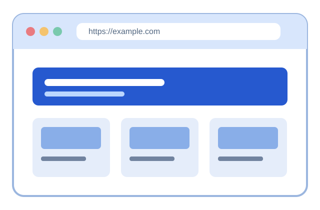

Rendering engine
Turns page structure and styles into visible content.
IT 3203 • WEB TECHNOLOGY RESEARCH
From the first graphical browsers to the modern engines that power everyday life, explore how the web became what it is today.
A web browser is an application that retrieves online resources, interprets HTML, CSS, and JavaScript, and displays interactive web pages. Browsers also manage security, storage, and privacy settings.
Browsers and search engines are different: a browser opens web content, while a search engine helps you find it.
Explore the history →
Turns page structure and styles into visible content.
A tree representation of the HTML document.
A security boundary that restricts untrusted page code.
Use these sections to explore the research.